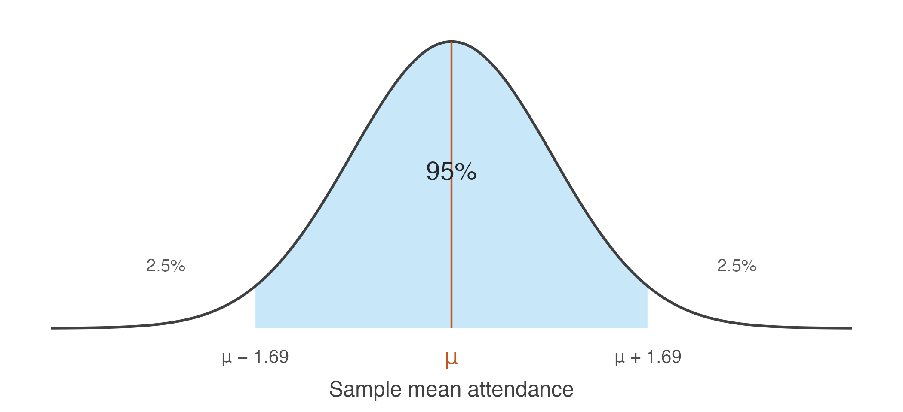

3.4 From a point estimate to an interval
Our best guess is a single number. How often is a single number right?
Everything we have estimated so far has been a point estimate: \(\bar{x}\) for the population mean \(\mu\), \(s^2\) for the population variance \(\sigma^2\), and \(\hat{p}\) for the population proportion \(p\). Each is a single number extracted from the sample and presented as our best estimate of an unknown population quantity.
A point estimate, however, is only a guess. It is the best guess the sample can provide, but it is almost certainly not exactly equal to the population parameter.
This is worth stating explicitly because it runs against our intuition. Suppose a survey reports that students attend an average of 26.1 classes. It is tempting to conclude that the population mean attendance is 26.1. In reality that conclusion is almost certainly wrong. The estimate is not poorly calculated or misleading — it is simply unlikely to equal the true population mean exactly. The real question is not whether the estimate is correct, but how far from the truth it is likely to be.
To explore that question, let us return to a setting where we know the truth. Treat the full dataset of 680 students as the population, whose mean attendance is 26.147 classes. We repeatedly draw random samples of 40 students and compute the sample mean for each one. Comparing these estimates with the known population mean allows us to see how much a point estimate typically differs from the truth.
students <- read.csv("data/attendance-grades.csv")
att <- students$attendance
mu_pop <- mean(att)
set.seed(2)
guesses <- replicate(10000, mean(sample(att, 40, replace = TRUE)))
error <- abs(guesses - mu_pop)
c(exactly_right = sum(guesses == mu_pop),
typical_miss = median(error),
average_miss = mean(error),
missed_by_over_1 = mean(error > 1))#> exactly_right typical_miss average_miss missed_by_over_1
#> 0.0000 0.5779 0.6895 0.2464Not one of the ten thousand estimates was exactly right. The typical estimate missed the population mean by about 0.58 classes, and roughly a quarter of them were off by more than a full class.
None of this indicates that anything has gone wrong. Each of those ten thousand estimates was computed correctly, from an honestly drawn sample, using an estimator we spent the whole of the previous unit justifying. Missing the truth is simply what point estimates do.
So how do we say something that stands a chance of being true?
By widening the guess.
Instead of naming a single value, we name a range and claim the truth lies inside it. A range can be right, and how often it is right is something we can control: the wider we make it, the more often it succeeds.
Notice that this is not a retreat into vagueness. We are not saying “somewhere around 26” because we have given up on precision. We are making a calculated guess — calculated in the literal sense, because the previous units told us exactly how much \(\bar{X}\) varies from sample to sample. It is \(\sigma/\sqrt{n}\). Knowing that, we can widen the guess by a specific, defensible amount and state in advance how often such a range will contain the truth.
A point estimate names one value. It is the best single guess available, and it is essentially never exactly correct.
An interval estimate names a range, together with the proportion of the time such ranges contain the parameter. It trades precision for the ability to be right.
The standard error is what makes the second possible. Without a measure of how much the estimate moves from sample to sample, there would be no principled way to choose the width.
The rest of this section works out how wide the range must be.
Building the interval
Suppose a survey of 40 students reports an average attendance of 26.4 classes.
This is our point estimate of the unknown population mean. It is the single best guess the sample can provide.
But how much faith should we place in that guess?
From the previous unit we know that if the survey were repeated many times, each sample would produce a slightly different mean. Some would fall above the population mean and others below it. The point estimate we happen to hold is only one of many values that could have been observed.
Fortunately we also know something about how those sample means behave.
The Central Limit Theorem tells us that, for reasonably large samples, the sampling distribution of the sample mean is approximately normal. Its centre is the population mean \(\mu\), and its spread is the standard error \(\sigma/\sqrt{n}\).
Suppose previous studies tell us the population standard deviation is \(\sigma = 5.45\) classes. With \(n = 40\),
\[\mathrm{se}(\bar{X}) = \frac{5.45}{\sqrt{40}} = 0.86\]
So although we do not know the value of the population mean, we do know how much sample means typically fluctuate around it.
The normal distribution turns that fluctuation into a probability. Its probabilities are determined entirely by distance from the centre: about 68% of values lie within one standard deviation, about 95% within 1.96, and about 99.7% within three.
The middle one is what we need.

Figure 3.1: The sampling distribution of the sample mean. The shaded region holds 95% of all sample means that could be drawn.
The shaded region represents the 95% of all possible sample means lying within 1.96 standard errors of the population mean. If we repeatedly drew samples of 40 students, roughly 95 out of every 100 sample means would fall inside this region and about 5 would fall outside.
The relationship between distance and probability is worth exploring rather than memorising. Drag the slider to see how much of the distribution lies within any given number of standard errors of the centre.
Notice what the slider shows. Widening the region always captures more of the distribution, but never all of it, and the gain slows sharply. Moving from 1.96 to 2.58 standard errors buys the last four percentage points, and no finite distance reaches 100%.
Returning to our survey: with a standard error of 0.86, the distance corresponding to 95% is
\[1.96 \times 0.86 \approx 1.69 \text{ classes}\]
Reversing the question
Now comes the key idea.
If almost all sample means lie within 1.69 classes of the population mean, then the sample mean we actually observed is usually no more than 1.69 classes away from the truth. So instead of asking
How far is the sample mean from the population mean?
we ask
Given the sample mean we observed, which values of the population mean are consistent with it?
The answer is obtained by taking the observed sample mean and moving 1.69 classes in each direction:
\[26.4 - 1.69 \qquad\text{to}\qquad 26.4 + 1.69\]
which gives
\[(24.71,\; 28.09)\]
Rather than offering a single best guess, we now report a range of plausible values for the unknown population mean.
The reversal above was stated in words. Here it is as algebra, which is where both the \(\pm\) formula and the number 1.96 come from.
For large enough samples the sample mean is approximately normal with mean \(\mu\) and standard deviation \(\sigma/\sqrt{n}\). Standardising it — subtracting its mean and dividing by its standard deviation — gives a quantity with a distribution containing no unknowns at all:
\[Z = \frac{\bar{X} - \mu}{\sigma/\sqrt{n}} \;\sim\; N(0, 1)\]
This is the step that makes everything else possible. Whatever the population, whatever its units, whatever \(n\), the standardised sample mean has the same distribution — so a single number read off that distribution serves every problem of this kind.
That number is the solution to \(P(|Z| \le c) = 0.95\), which is \(c = 1.96\). In R
it is qnorm(0.975), the value with 2.5% of the distribution above it.
Now unwind the standardisation. Each line is the previous one with the same operation applied to all three parts of the inequality:
\[ \begin{aligned} P\big(|Z| \le 1.96\big) &= 0.95 \\[6pt] P\left(-1.96 \;\le\; \frac{\bar{X} - \mu}{\sigma/\sqrt{n}} \;\le\; 1.96\right) &= 0.95 && \text{definition of } Z \\[6pt] P\left(-1.96\frac{\sigma}{\sqrt{n}} \;\le\; \bar{X} - \mu \;\le\; 1.96\frac{\sigma}{\sqrt{n}}\right) &= 0.95 && \times \; \sigma/\sqrt{n} \\[6pt] P\left(-\bar{X} - 1.96\frac{\sigma}{\sqrt{n}} \;\le\; -\mu \;\le\; -\bar{X} + 1.96\frac{\sigma}{\sqrt{n}}\right) &= 0.95 && - \; \bar{X} \\[6pt] P\left(\bar{X} - 1.96\frac{\sigma}{\sqrt{n}} \;\le\; \mu \;\le\; \bar{X} + 1.96\frac{\sigma}{\sqrt{n}}\right) &= 0.95 && \times \; (-1) \end{aligned} \]
The last step multiplies through by \(-1\), which reverses both inequality signs and therefore swaps the two endpoints.
Nothing has been added and nothing has been assumed beyond the Central Limit Theorem. The same statement now has \(\mu\) in the middle instead of \(\bar{X}\), which is what turns a fact about how sample means scatter into an interval around the one we happened to observe.
The second line above must be read as a single event — \(Z\) lying between two bounds — and not as two separate probabilities added together.
It is tempting to split \(P(|Z| \le 1.96)\) into \(P(Z \le 1.96) + P(-Z \le 1.96)\). Those two probabilities are each 0.975, and they sum to 1.95, which is not a probability at all. The two events overlap almost entirely, and adding them counts the overlap twice.
Only the constant changes for other confidence levels. Replacing 1.96 by \(z_{\alpha/2}\), the value with \(\alpha/2\) of the distribution above it, gives the general result at once — 1.645 for 90%, 2.576 for 99%.
This interval is called a 95% confidence interval, and the remaining question is what that phrase actually means — a question the next section answers.
A confidence interval for \(\mu\), when \(\sigma\) is known, is
\[\bar{x} \;\pm\; z_{\alpha/2}\,\frac{\sigma}{\sqrt{n}}\]
The quantity \(z_{\alpha/2}\,\sigma/\sqrt{n}\) is the margin of error. The confidence level is \(1 - \alpha\).
| Confidence | \(\alpha\) | \(z_{\alpha/2}\) |
|---|---|---|
| 90% | 0.10 | 1.645 |
| 95% | 0.05 | 1.960 |
| 99% | 0.01 | 2.576 |
In R these come from qnorm(1 - alpha/2) — there is no need for a printed
table.
x_bar <- 26.4
sigma <- 5.45
n <- 40
for (level in c(0.90, 0.95, 0.99)) {
z <- qnorm(1 - (1 - level) / 2)
ci <- x_bar + c(-1, 1) * z * sigma / sqrt(n)
cat(sprintf("%2.0f%% z = %.3f [%.2f, %.2f] width %.2f\n",
100 * level, z, ci[1], ci[2], diff(ci)))
}#> 90% z = 1.645 [24.98, 27.82] width 2.83
#> 95% z = 1.960 [24.71, 28.09] width 3.38
#> 99% z = 2.576 [24.18, 28.62] width 4.44Higher confidence buys a wider interval, and this is the central trade-off of the whole method. A 99% interval is more likely to contain \(\mu\) precisely because it commits to less. An interval certain to contain the truth would run from minus infinity to infinity and tell us nothing at all.
What does 95% actually refer to?
The interval either contains \(\mu\) or it does not. Nothing is random about it once the sample is drawn — \(\mu\) is a fixed number, and so are the two endpoints sitting in front of us.
The 95% describes the procedure. If we drew sample after sample and constructed an interval each time, about 95% of those intervals would contain \(\mu\). Since we cannot know whether ours is among them, we report the interval and its coverage rate together.
We can watch this happen. Treat the 680 students as a population, so \(\mu\) is known, and construct 100 intervals from 100 samples.
students <- read.csv("data/attendance-grades.csv")
att <- students$attendance
mu_pop <- mean(att)
sigma_pop <- sqrt(mean((att - mean(att))^2))
set.seed(1)
ci_sim <- t(replicate(100, {
x <- sample(att, 40, replace = TRUE)
mean(x) + c(-1, 1) * 1.96 * sigma_pop / sqrt(40)
}))
covers <- ci_sim[, 1] <= mu_pop & ci_sim[, 2] >= mu_pop
d <- data.frame(id = 1:100, lo = ci_sim[, 1], hi = ci_sim[, 2],
covers = ifelse(covers, "Contains μ", "Misses μ"))
ggplot(d, aes(y = id, xmin = lo, xmax = hi, colour = covers)) +
geom_errorbarh(height = 0, linewidth = 0.45) +
geom_vline(xintercept = mu_pop, linewidth = 0.7, colour = "grey20") +
scale_colour_manual(values = c(book_palette$fill, book_palette$reject),
name = NULL) +
labs(x = "Mean attendance", y = NULL) +
theme_book() +
theme(axis.text.y = element_blank(), legend.position = "top")
Figure 3.2: One hundred 95% confidence intervals, each from a fresh sample of 40 students. The vertical line is the true population mean.
Of these 100 intervals, 95 contain the population mean and 5 do not. The misses are not mistakes. They are the 5% the method openly budgets for, and a procedure that never missed would be one that had stopped saying anything.
Note also that the misses are not near-misses in any special sense — they are simply the samples whose means happened to fall furthest from \(\mu\). Nothing about such a sample looks wrong from the inside. A researcher holding one of those five would see a perfectly ordinary set of forty students.